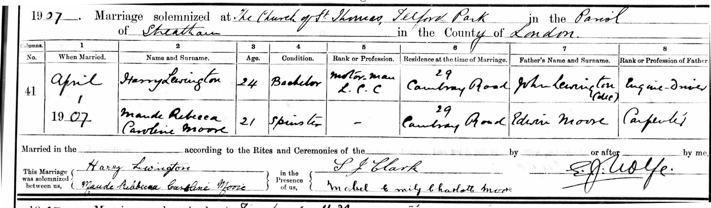
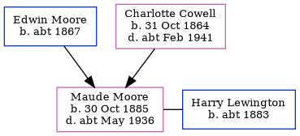

Maude Rebecca Caroline Lewington (née Moore) 1885 - c1936
[ Home ] | [ Calendar ] | [ Surnames Index ] | [ Errors ] | [ Family History ]A domestic general servant and the eldest of 3 children of Edwin Moore (a carpenter) and Charlotte Cowell (a domestic servant), Maude Moore, the second cousin twice-removed on the mother's side of Nigel Horne, was born in Larkfield, Kent, England on 30 Oct 18851,2,3,4,5,6 and baptised in East Malling, Kent, England on 27 Dec 1885. She married Harry Lewington at St Thomas, Telford Park, Streatham, London, England on 1 Apr 19078.
During her life, she was living at Standard Road, Bexley, London on 5 Apr 189110; at Priory Walk, Tonbridge, Kent, England on 31 Mar 19013; and at 105 Claxton Grove, West Kensington, London in 19239.
She died c. May 1936 in Fulham, London, England7.
Parents
- Edwin was born c. 1867
- Charlotte Priscilla Ann was born on 31 Oct 1864
Citations
- 1891 England Census Online publication - Provo, UT, USA: The Generations Network, Inc., 2005.Original data - Census Returns of England and Wales, 1891. Kew, Surrey, England: The National Archives of the UK (TNA): Public Record Office (PRO), 1891. Data imaged from The National
- 1901 England Census Online publication - Provo, UT, USA: The Generations Network, Inc., 2005.Original data - Census Returns of England and Wales, 1901. Kew, Surrey, England: The National Archives of the UK (TNA): Public Record Office (PRO), 1901. Data imaged from the National
- 1901 England, Wales & Scotland Census - Findmypast (was age 15 and the daughter of the head of the household)
- England & Wales births 1837-2006 - Findmypast
- England, Select Births and Christenings, 1538-1975 Ancestry.com Operations, Inc.
- Kent Baptisms - Findmypast
- England & Wales deaths 1837-2007 - Findmypast
- England & Wales Marriages 1837-2005 - Findmypast
- London, England, Electoral Registers, 1832-1965 Ancestry.com Operations, Inc.
- 1891 England, Wales & Scotland Census - Findmypast (was age 5 and the daughter of the head of the household)
Media
Maude Moore - Harry Lewington - Marriage Record

England, Births & Baptisms 1538-1975 Transcription - R_885448040
Kent Baptisms Transcription - GBPRS-B-82129758-1
England, Births & Baptisms 1538-1975 Transcription - R_870995149
England & Wales births 1837-2006 Transcription - BMD-B-1885-4-AZ-000392-151
England & Wales marriages 1837-2008 Transcription - BMD-M-1907-2-AZ-000259-363
England & Wales deaths 1837-2007 - BMD/D/1936/2/AZ/000568/025
England Births & Baptisms 1538-1975 - R_934898398
Kent Baptisms - PRS/KENT/BAP/0378258
1891 England, Wales & Scotland Census - GBC/1891/0005243271
Family Tree
Map
Generated by ged2site. Last updated on Jul 3, 2024
Known Issues
Listed in the residence for 1923, but spouse Harry Lewington is not